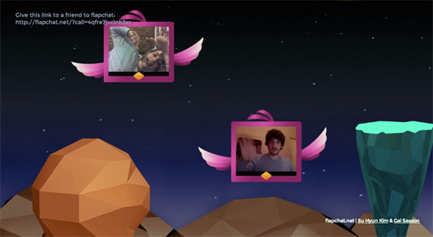

FlapChat
FlapChat is an interactive web app that allows people to engage in video chat while flying over the screen. Each user is represented by a small bird with a video screen inside it. Using a standard webcam, users can flap their hands to control the bird and fly inside the imaginary chat world.
Try it here: flapchat.net
